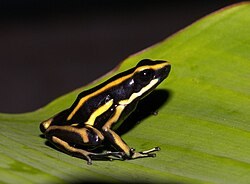

Todo sobre la Dendrobates truncatus

Características principales
- Nombre común: Rana venenosa de Colombia o rana dardo venenoso truncatus.
- Distribución: Es endémica de Colombia, específicamente en bosques húmedos tropicales de tierras bajas, como los de la región del Magdalena Medio.
- Tamaño: Es una rana pequeña, alcanzando entre 2 y 3 cm de longitud
- Coloración: Tiene un patrón negro con rayas o manchas amarillas, características que la hacen muy llamativa y sirven como advertencia para depredadores.
- Toxicidad: Como otras ranas venenosas, secreta toxinas a través de su piel para disuadir a los depredadores. Estas toxinas las obtienen de su dieta en estado salvaje (insectos tóxicos).
Hábitat y comportamiento
- Hábitat: Vive en el suelo del bosque y cerca de cuerpos de agua, donde deposita sus huevos. Los renacuajos suelen ser transportados por los adultos a pequeñas acumulaciones de agua, como bromelias.
- Dieta: Se alimenta de pequeños insectos como hormigas, ácaros y termitas, de donde adquiere los compuestos necesarios para producir sus toxinas.
- Comportamiento: Son animales diurnos y solitarios.
Conservación
- Estado de conservación:En general, muchas ranas del género Dendrobates enfrentan amenazas debido a la pérdida de hábitat, el cambio climático y el tráfico de animales exóticos
- Importancia ecológica: Al ser controladores de insectos y parte de la cadena alimenticia, juegan un papel crucial en los ecosistemas donde habitan.